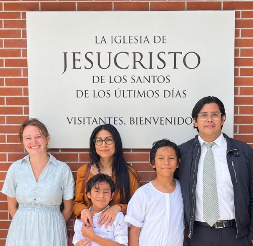

Jorge Alberto Ayala Sanchez | WDD 130

Hi Everyone! My name is Jorge Sanchez, and I’m from El Salvador. I love spending time with my family, learning new things, and finding ways to improve myself. I have experience in administration, accounting, and also in property management, and I’m currently studying at BYU-Pathway. I fell very excited to learn about programming, web design and development because it’s something new for me, and I’m looking forward to discover what I can create with all these skills. I know I still have a lot to learn, but I’m quite sure that with Jesus Christ, this new experience would be a great opportunity for growth.